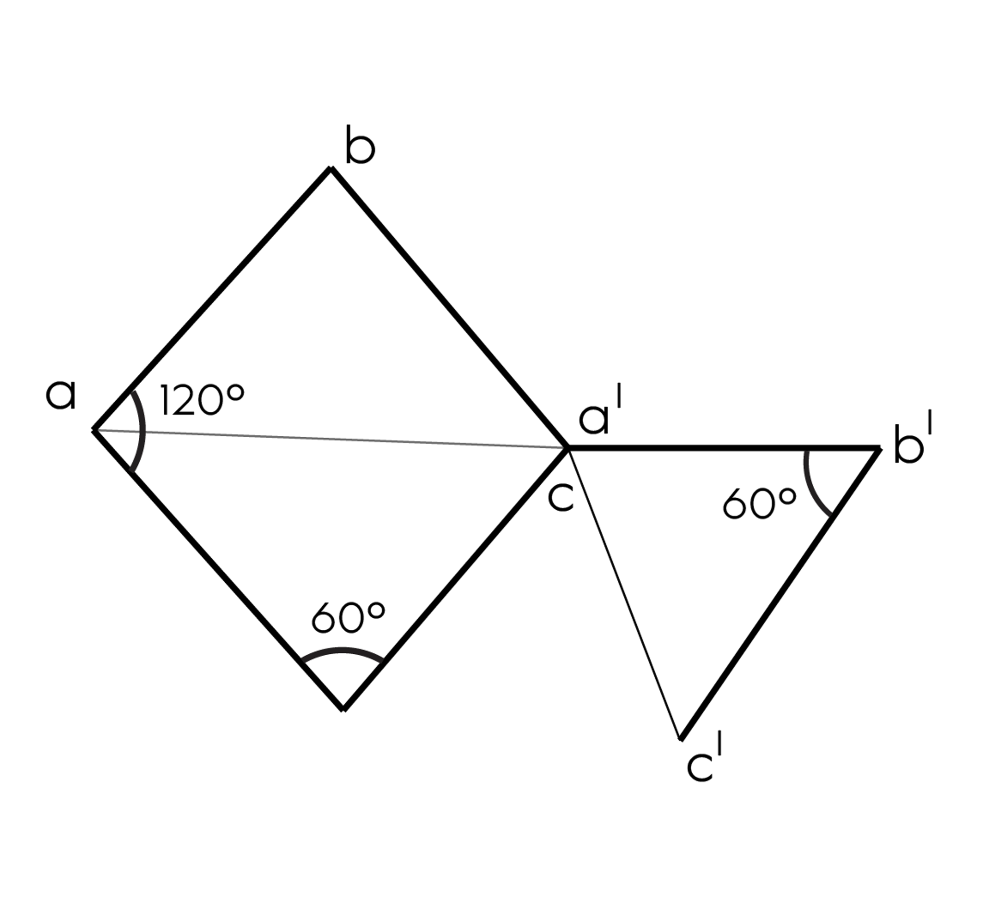

Key Measurements
- A parallelogram composed of two angles of 120° and two angles of 60°
- The Rhomboid flap has a “bent leg” which is an extension of one of the obtuse angles
- Two components of “bent leg”:
- Thigh:
- Length: distance between the 120° angles
- Orientation: Perpendicular to one of the 120° angles
- Shin:
- Length: Distance between the 120° to 60° angle
- Orientation: Parallel to a side of the rhomboid between the 120° to 60° angle
